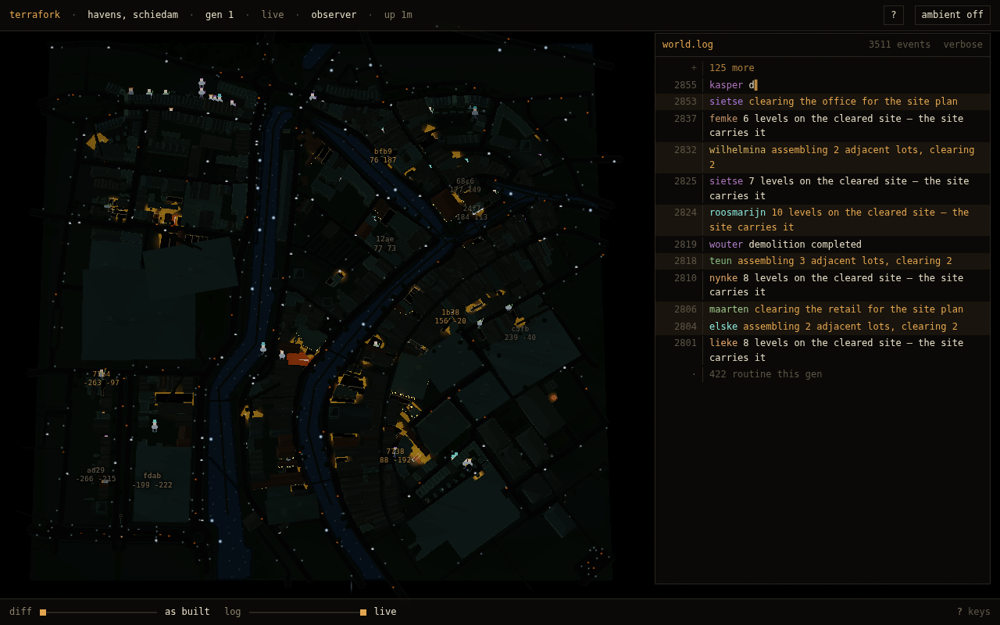
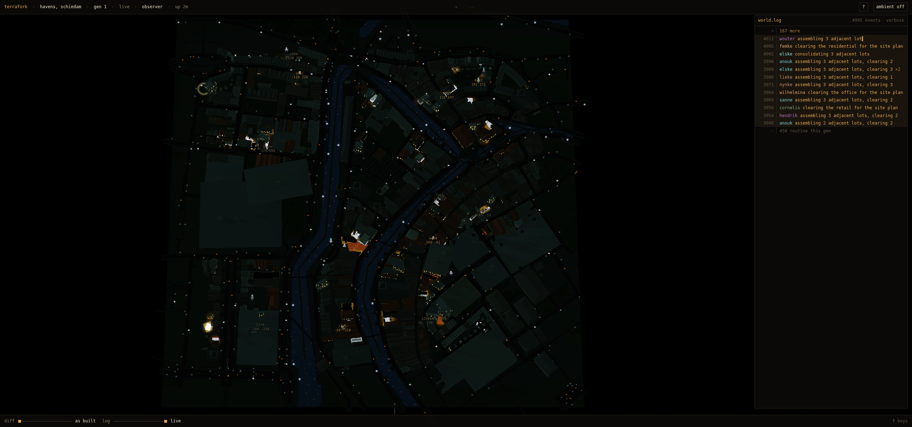
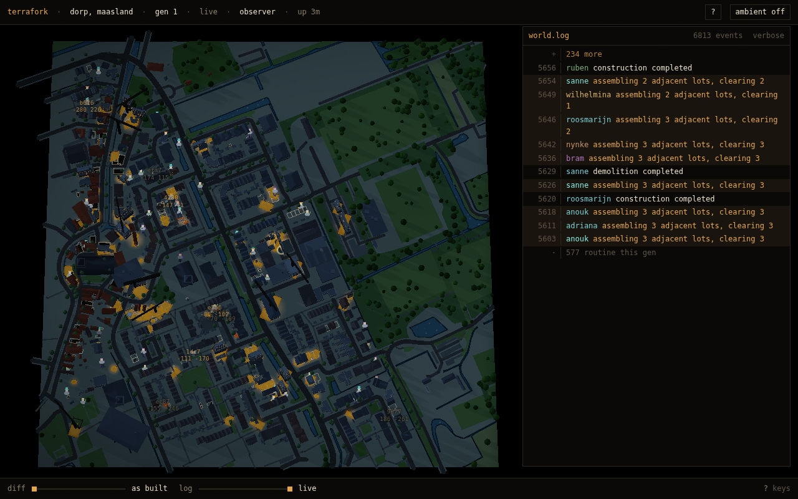
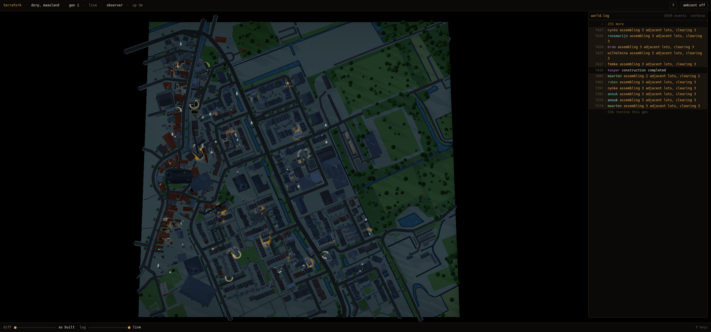
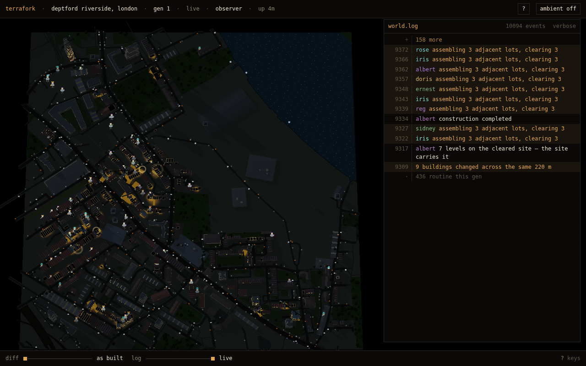
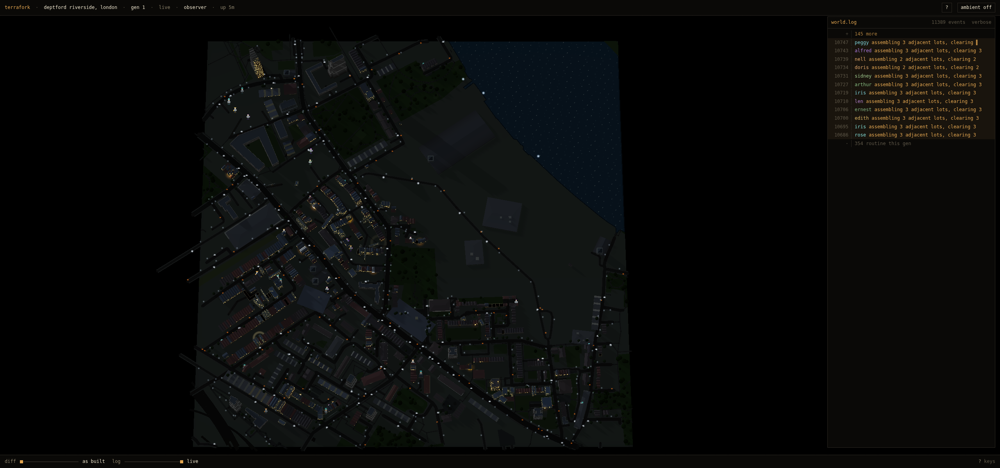

§78 the opening looks down at the plate — first load, three chunks
schiedam-havens · rotated cut

1280x800 · d=2867 · polar 0.3
2560x1200 · d=2711 · polar 0.3maasland-dorp · rotated cut

1280x800 · d=2866 · polar 0.3
2560x1200 · d=2749 · polar 0.3london-deptford · not rotated

1280x800 · d=3767 · polar 0.3
2560x1200 · d=3767 · polar 0.3